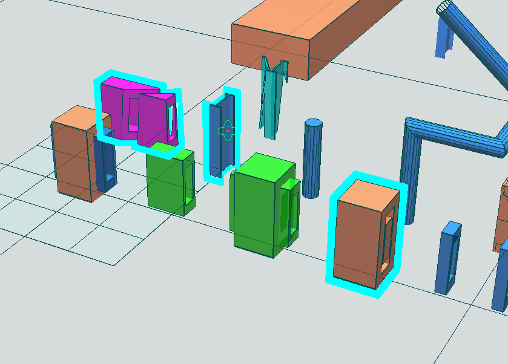

29.外轮廓效果
在一些场景下需要绘制出组件的外轮廓效果以进行凸显提示，如在场景中重点突出部分组件吸引关注、凸显被选择组件等。
外轮廓效果是三维软件的基础功能之一，可以使用模板缓冲机制来实现。
Attention
注意此处的外轮廓效果和此前的轮廓线是不同的概念，这里的外轮廓效果是为了凸显组件外围轮廓效果的渲染效果，不属于组件固有的几何信息数据。

29.1.模板缓冲概念
模板测试(Stencil Test)运行于深度测试之前，模板测试通过的片段会执行深度测试，那么什么时候执行模板测试呢？
在片段着色器中处理了片段之后，即进入模板测试阶段，根据模板缓冲(Stencil Buffer)，来决定是否丢弃对应片段，而我们可以通过控制模板测试阶段来获得一些有趣的效果，包括本章的主题-外轮廓效果。
补充
- 一般来说，
模板缓冲中每个模板值(Stencil Value)是8位的，所以每个像素/片段可有2^8即256种不同的模板值； - 我们可以通过设置片段的模板值，之后通过模板值的比对来决定丢弃或是保留对应的片段。

29.2.相关接口
1) 启用模板测试，
glEnable(GL_STENCIL_TEST);
2) 清理模板缓冲
下述代码包括清理颜色缓冲、深度缓冲和模板缓冲，
glClear(GL_COLOR_BUFFER_BIT | GL_DEPTH_BUFFER_BIT | GL_STENCIL_BUFFER_BIT);
3) 设置模板掩码
- 和深度测试的
glDepthMask函数类似，可以通过glStencilMask设置一个模板位掩码(Bitmask)，在写入缓冲的模板值前与该掩码进行与(AND)运算； - 默认情况下设置的位掩码所有位都为
1，不影响输出；但如果将它设置为0x00，写入缓冲的所有模板值最后都会变成0，这与深度测试中的glDepthMask(GL_FALSE)是等价的。
glStencilMask(0xFF); // 将模板值原样写入模板缓冲
glStencilMask(0x00); // 将模板值处理为0后写入模板缓冲（禁用写入）
4) 模板函数
可以通过模板函数来影响模板缓冲的测试，也就是控制模板测试过程，模板函数包括glStencilFunc和glStencilOp。
其中glStencilFunc决定是否通过模板测试，根据参数的不同可能会依据对应的模板值与参考值进行比较测试；而glStencilOp则根据模板测试结果决定对当前的模板值进行怎样的更新。
glStencilFunc(GLenum func, GLint ref, GLuint mask)
func：设置模板测试函数(Stencil Test Function)，该测试函数决定如何将模板缓冲中的模板值和第二个函数参数ref值星星测试比较。可用的选项有GL_NEVER、GL_LESS、GL_LEQUAL、GL_GREATER、GL_GEQUAL、GL_EQUAL、GL_NOTEQUAL和GL_ALWAYS；ref：设置了模板测试的参考值(Reference Value)，模板缓冲中的模板值将会与这个值进行测试比较；mask：设置一个掩码，模板值会与该掩码进行与(AND)运算，之后再与参考值ref进行测试比较。初始情况下所有位都为1。
glStencilOp(GLenum sfail, GLenum dpfail, GLenum dppass)
sfail：模板测试失败时采取的行为；dpfail：模板测试通过，但深度测试失败时采取的行为；dppass：模板测试和深度测试都通过时采取的行为。
上述参数可选项如下表所示：
| 行为 | 描述 |
|---|---|
| GL_KEEP | 保持当前储存的模板值 |
| GL_ZERO | 将模板值设置为0 |
| GL_REPLACE | 将模板值设置为ref值 |
| GL_INCR | 如果模板值小于最大值则将模板值加1 |
| GL_INCR_WRAP | 与GL_INCR一样，但如果模板值超过了最大值则归零 |
| GL_DECR | 如果模板值大于最小值则将模板值减1 |
| GL_DECR_WRAP | 与GL_DECR一样，但如果模板值小于0则将其设置为最大值 |
| GL_INVERT | 按位翻转当前的模板缓冲值 |
默认情况下glStencilOp是设置为(GL_KEEP, GL_KEEP, GL_KEEP)的，不论任何测试的结果如何，都不会更新模板缓冲中的值。但我们可以通过控制这些参数来控制模板缓冲中的模板值的更新，进而影响后续的模板测试过程。
提示
通过使用glStencilFunc和glStencilOp，我们可以通过灵活的控制模板测试和模板缓冲的更新行为，以获取一些有趣的渲染效果。
29.3.外轮廓效果实现
通过上述知识的学习，我们了解了可以灵活的控制模板测试过程和模板值更新过程，现在我们想显示选中组件的外轮廓效果，让我们来活学活用吧~
Important
- 我们正常绘制所有组件，包括选中的组件；
- 我们再“绘制”一遍选中的组件以输出这些片段对应的模板值，有几个注意事项：
- 由于此前绘制了，所以我们通过
glDepthFunc(GL_NEVER);语句使得片段都不通过深度测试，也就是不输出到当前帧缓冲(Framebuffer)中； - 由于我们通过
glClear清理了模板缓冲，所以当前模板缓冲中的值都为0，我们通过glStencilFunc(GL_ALWAYS, 1, 0xFF)让选中组件对应的片段都通过模板测试，且设置ref参考值为1； - 我们通过
glStencilOp(GL_KEEP, GL_REPLACE, GL_REPLACE)让这些片段对应的模板值都更新为ref参考值，也就是1； - 经过这些设置和处理，现在模板缓冲中只有选中组件对应片段的模板值是
1，其他的都为0；
- 由于此前绘制了，所以我们通过
- 我们再绘制一遍选中的组件，这次我们把组件都绕其包围盒中心“扩大”，这样他们对应的像素区域比模板缓冲中值为
1的像素区域“大一圈”，而这一圈的模板值是0！- 通过
glStencilFunc(GL_NOTEQUAL, 1, 0xFF)让外围圈的片段通过模板测试，这次我们只进行模板测试，但不更新模板缓冲中的模板值(glStencilMask(0x00)) ； - 我们恢复深度测试函数默认值，并禁用深度测试
glDepthFunc(GL_LESS);glDisable(GL_DEPTH_TEST);，以便让通过模板测试的“外围圈”都通过深度测试，进而绘制到当前帧缓冲(Framebuffer)中，绘制到屏幕上； - 注意当前使用的片段着色器仅输出设置的外轮廓效果的颜色，也就是“外围圈”都是一种颜色。
- 通过
- 我们恢复模板缓冲和深度缓冲的设置，以便后续工作的正常进行。
上述外轮廓绘制步骤示意图如下，

补充
为了绘制组件周围的外轮廓效果，我们需要把组件都绕其包围盒中心“扩大”，扩大多少合适呢？三个轴方向的比例都一样吗？详细请看代码~
29.4.关键代码
void GLView::initializeGL()
{
// other init code here
// setting of Stencil Test
glEnable(GL_STENCIL_TEST);
glStencilFunc(GL_NOTEQUAL, 1, 0xFF);
glStencilOp(GL_KEEP, GL_REPLACE, GL_REPLACE);
// other code......
void GLView::paintGL()
{
// other code
// clear stencil buffer
glClear(GL_COLOR_BUFFER_BIT | GL_DEPTH_BUFFER_BIT | GL_STENCIL_BUFFER_BIT);
// disable update of stencil value
glStencilMask(0x00);
// other code
// draw selected
DrawSelected();
// other code
}
void GLView::DrawSelected()
{
// draw selected
glStencilFunc(GL_ALWAYS, 1, 0xFF);
glStencilMask(0xFF);
//glDisable(GL_DEPTH_TEST);
glDepthFunc(GL_NEVER);
m_singleColorShader.bind();
m_singleColorShader.setUniformValue("projection", m_projectionMat);
m_singleColorShader.setUniformValue("view", m_viewMat);
m_singleColorShader.setUniformValue("model", m_modelMatrix);
m_model->DrawSelected(m_singleColorShader);
// draw outline of selected
glStencilFunc(GL_NOTEQUAL, 1, 0xFF);
glStencilMask(0x00);
glDepthFunc(GL_LESS);
glDisable(GL_DEPTH_TEST);
// TODO
// TODO use shaderSingleColor
m_model->DrawSelected(m_singleColorShader, true);
m_singleColorShader.release();
glStencilMask(0xFF);
glStencilFunc(GL_ALWAYS, 0, 0xFF);
glEnable(GL_DEPTH_TEST);
}
singleColor.frag：
#version 450 core
out vec4 FragColor;
//in vec2 TexCoords;
in vec3 Normal;
in vec3 FragPos;
//uniform sampler2D texture_diffuse1;
uniform vec3 lightPos;
uniform vec3 lightColor;
uniform vec4 objectColor;
void main()
{
FragColor = vec4(0.0, 1.0, 1.0, 1.0);
}
29.5.效果
如果一切正常，或者遇到的问题被排查解决，那么运行之后的效果如下，有问题或疑问请查看工程代码或联系我。